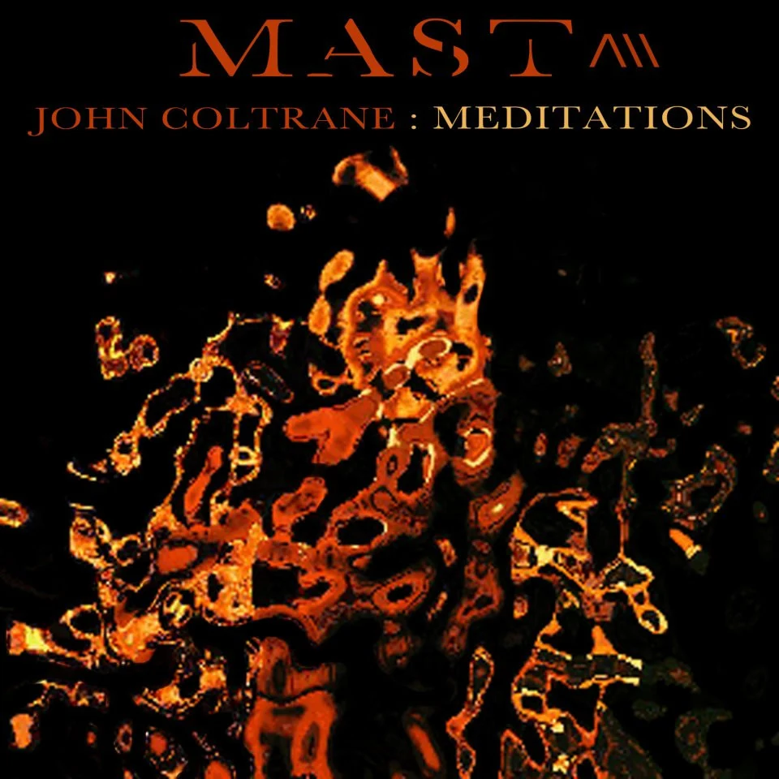

EP
John Coltrane: Meditations
A MAST interpretation of Coltrane’s spiritual masterwork.

Album biography
About the work
This EP reinterprets John Coltrane’s complete 1965 album Meditations. Samples, loops and sounds from the original recording are carefully selected and reshaped with added electronic and acoustic elements.
MAST recorded subtle guitar, bass, cello and violin, while saxophonist and poet Elliott Levin contributes spoken word to “Love.” The project honors not only Coltrane’s music, but also his spiritual devotion, discipline and willingness to push sonic boundaries.
Featuring
Elliott Levin
Track listing
- The Father, the Son and the Holy Ghost
- Compassion
- Love (featuring spoken word by Elliott Levin)
- Consequences
- Serenity
Personnel & credits
Release: September 26, 2012
MAST — sampling, programming, guitar, bass, cello and violin
Elliott Levin — spoken word on “Love”
“MAST is mixing free-jazz with left-of-center instrumental rap beats, and this record thrusts him into the ever-popular jazz/hip hop conversation."— DownBeat